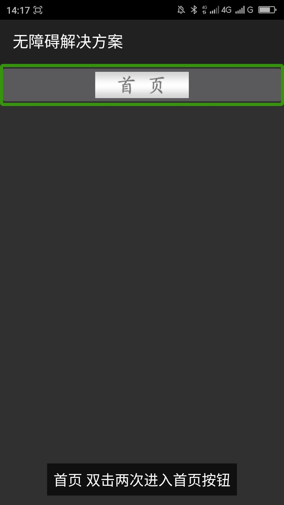
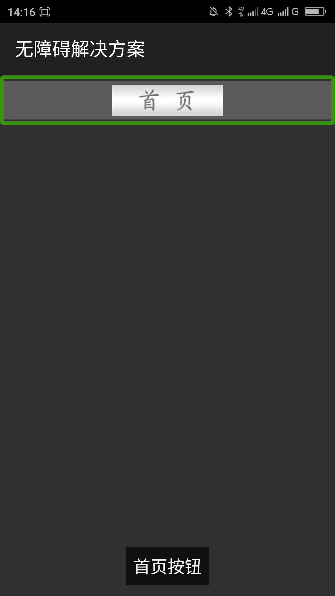

去掉替代文本中的使用提示和冗余信息____20160423
【问题描述】
替代文本中除了有控件的目的、功能之外还有使用提示或冗余信息，屏幕阅读器用户都知道如何操作各类控件，所以在替代文本之中不必添加使用提示。而且屏幕阅读器开启使用提示的时候屏幕阅读器也会朗读出控件的使用方法。
【问题解决方案描述】
在替代文本之中一般不用添加使用提示，替代文本尽量简明扼要的描述出此控件的功能、目的或所展示的内容，替代文本不能太长。
【前后效果图对比】
|  |  |
| 优化前，屏幕阅读器朗读“首页 双击两次进入首页按钮” 一秒后，朗读按钮的操作方法； | 优化前，屏幕阅读器朗读“首页按钮” 一秒后，朗读按钮的操作方法； |